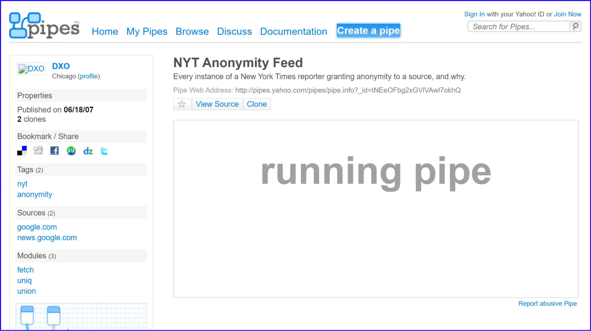
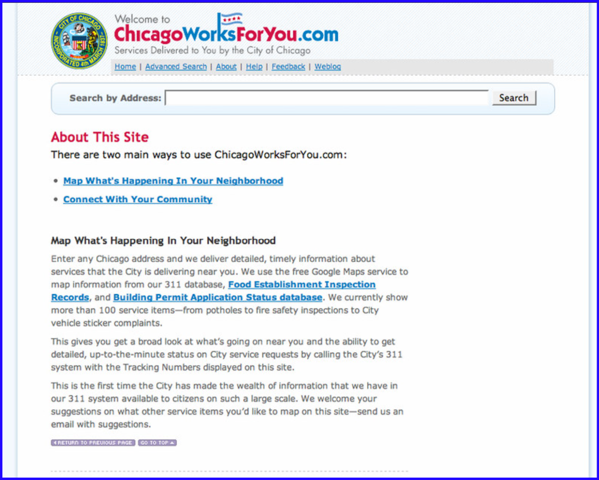

Worker in the open source movement
Long before open-source AI became a widely-used alternative to proprietary models, I was an early adopter and builder of open-source ecosystems. I helped build platforms, develop standards, and configure emerging tools to work in the real world.

At EveryBlock I helped create a new way of structuring and delivering local information— “a news feed for your block” and deliver an important open source repository

With Yahoo! Pipes YQ!, and Genius, I configured open-source tools that were early forms of data aggregation, automation, and annotation

Developed dozens of websites on the WordPress platform, pushing capabilities and connecting it to web services in innovative ways.